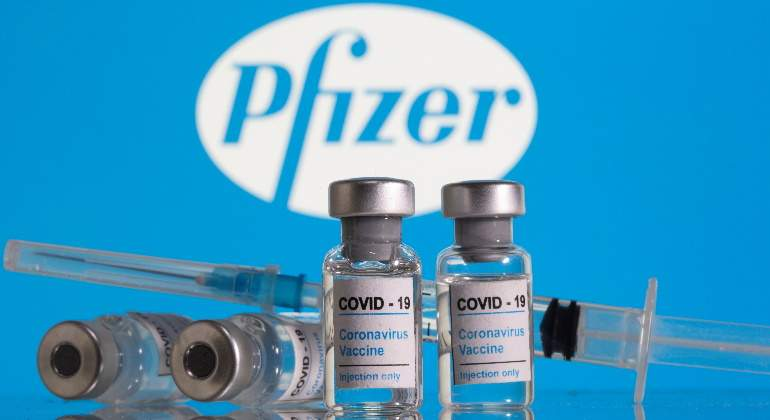
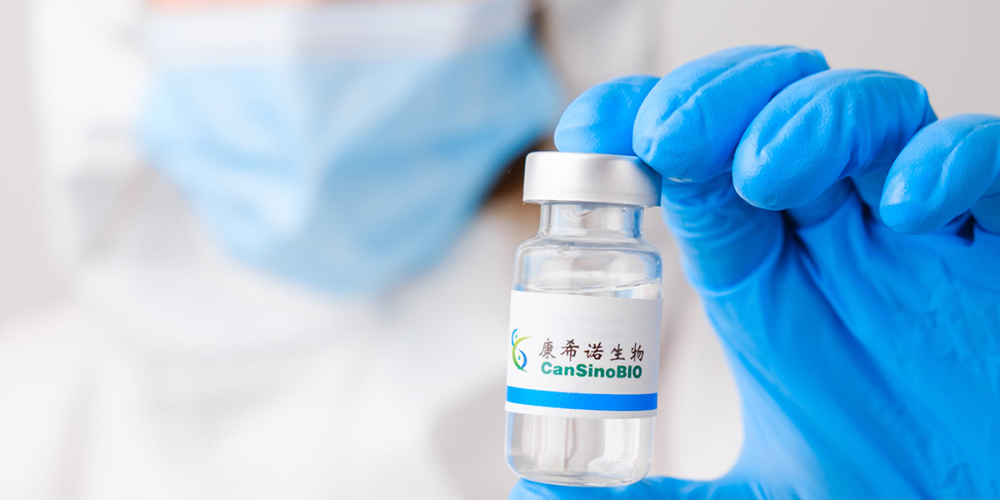
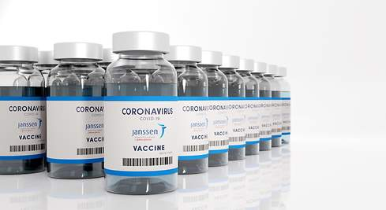
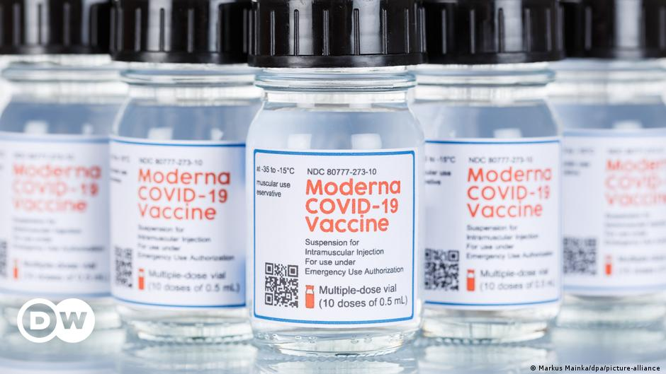
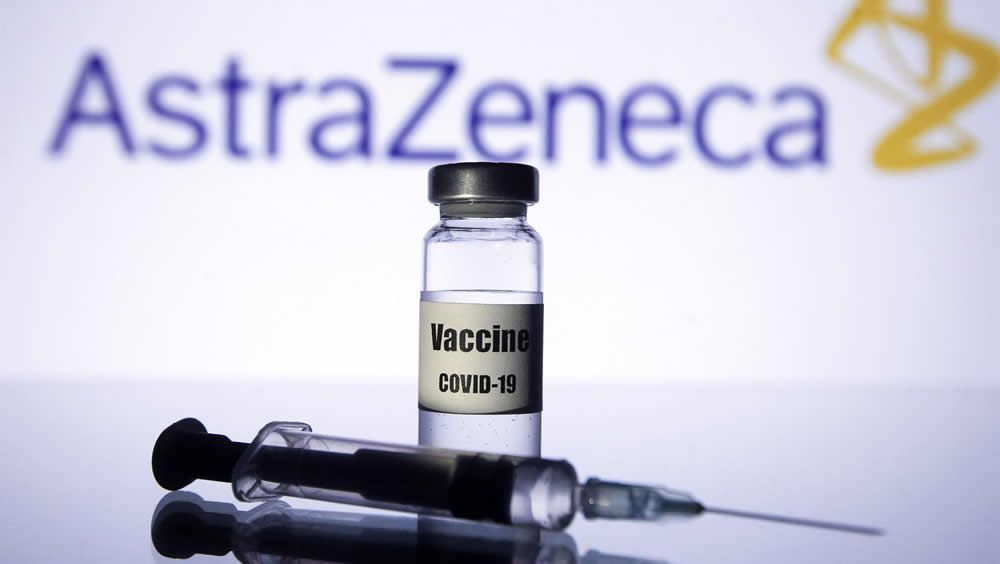
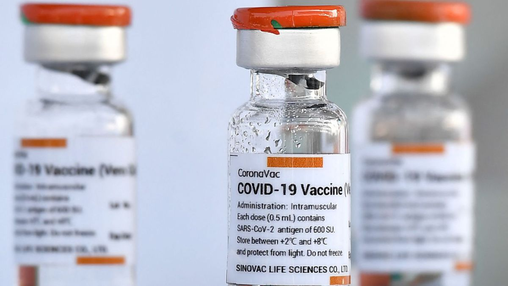
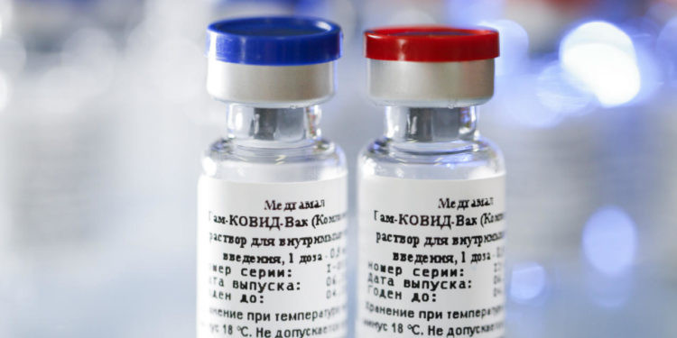
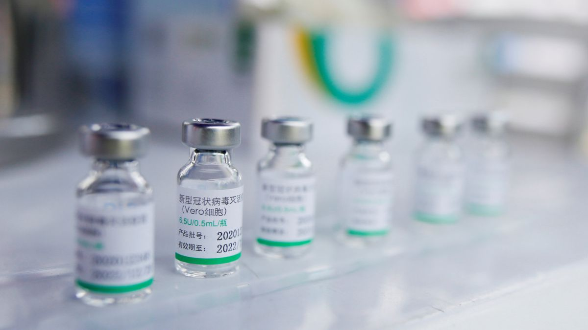

Pfizer-BioNTech (COMIRNATY) recibió la aprobación de la Administración de Alimentos y Medicamentos de EE. UU. el 23 de agosto del 2021, para usar en personas de 16 años de edad o más. Una vez que las vacunas son aprobadas por la FDA, las compañías pueden comercializar las vacunas con sus marcas. COMIRNATY es la marca de la vacuna contra el COVID-19 de Pfizer-BioNTech.
Ahora que la vacuna contra el COVID-19 de Pfizer-BioNTech ha sido autorizada y aprobada por la FDA para ser utilizada en personas de 16 años de edad o más será comercializada como COMIRNATY. El nombre Pfizer-BioNTech se seguirá utilizando para las personas de 12 a 15 años de edad ya que no ha sido aprobada para ser utilizada en este grupo de edad. No se realizaron modificaciones en la formulación de la vacuna por el cambio del nombre.
Los ingredientes de todas las vacunas contra el COVID-19 son seguros. Prácticamente todos los ingredientes incluidos en las vacunas contra el COVID-19 son ingredientes que se encuentran en los alimentos, como grasas, azúcares y sales. La vacuna contra el COVID-19 de Pfizer-BioNTech (COMIRNATY) también contiene una porción inocua de ARN mensajero (ARNm). El ARNm del COVID-19 les enseña a las células del organismo a generar una respuesta inmunitaria al virus que causa el COVID-19. Esta respuesta le brinda protección para evitar enfermarse a causa del COVID-19 en el futuro. Después de que el organismo produce la respuesta inmunitaria, descarta todos los ingredientes de la vacuna tal como lo haría con cualquier información que las células ya no necesitan. Este proceso forma parte del funcionamiento normal del organismo.
Todas las vacunas contra el COVID-19 se fabrican con muy pocos ingredientes y con cantidades ínfimas de cada uno de ellos. Cada ingrediente de la vacuna cumple un propósito específico, tal como se ve en la siguiente tabla.
En el brazo donde recibió la vacuna inyectable: Dolor, enrojecimiento e hinchazón
En el resto del cuerpo: Cansancio, Dolor de cabeza, Dolor muscular, Escalofríos, Fiebre y Náuseas
"La eficacia de la vacuna es de 65 a 68 % tras 14 días de su primera aplicación. (Además) protege en un 90 % de una forma grave. En otras palabras, habría una posibilidad del 10 % de tener una forma grave (con la vacuna Cansino)", afirma el vocero de la vacuna para México.
No obstante, afirmó que 6 meses, la eficacia ha disminuido a "más del 50%", que, sin embargo, es lo que recomienda como mínimo la Organización Mundial de la Salud para toda vacuna contra la enfermedad de COVID-19 que ha ocasionado una pandemia mundial.
Asimismo, explicó los datos del comunicado que la farmacéutica emitió el pasado 8 de agosto en donde afirmó que 6 meses después también los "anticuerpos neutralizantes" en las personas vacunadas se mantienen elevados aún en "casi 70%" de las personas.
En el mismo comunicado, la farmacéutica china informó que "la aplicación de una segunda dosis, como refuerzo a los seis meses, logra que los niveles de anticuerpos neutralizantes se multipliquen por ocho".
Dichos resultados han sido "entregados a la autoridad sanitaria mexicana (Cofepris)", informó la farmacéutica en el comunicado, aunque el vocero afirmó que esto no significa que hayan solicitado ya la autorización para la segunda aplicación.
"Estamos notificando los resultados, pero es muy diferente reportar y comunicar a hacer un proceso regulatorio, qué es un mucho más complejo. No hemos iniciado el trámite”, dijo el vocero en plática con Alejandro Navarrete, editor de CONECTA, en el programa Visor 94.9 de Tec Sounds Radio.
Detalló que aún no tienen la evidencia suficiente para solicitar dicha aplicación del refuerzo a quienes han recibido su vacuna anti-COVID de una sola dosis.
"Ya con toda la evidencia (de los estudios de la fase 3), vamos a tomar decisiones si se hace una modificación o inclusión de la aprobación que se tiene en México”, explicó.
Los ingredientes de todas las vacunas contra el COVID-19 son seguros. Prácticamente todos los ingredientes incluidos en las vacunas contra el COVID-19 también son ingredientes que se encuentran en los alimentos, como grasas, azúcares y sales. La vacuna contra el COVID-19 J&J/Janssen también contiene un fragmento de virus modificado que no es el virus que causa el COVID-19. Esta versión modificada del virus se conoce como vector viral. El vector viral no puede reproducirse, así que es inofensivo. Este vector viral da instrucciones a las células del organismo para crear una respuesta inmunitaria. Esta respuesta le brinda protección para evitar enfermarse a causa del COVID-19 en el futuro. Una vez que el organismo produce una respuesta inmunitaria, descarta todos los ingredientes de la vacuna, del mismo modo que descartaría cualquier información que las células ya no necesitan. Este proceso forma parte del funcionamiento normal del organismo.
Todas las vacunas contra el COVID-19 se fabrican con muy pocos ingredientes y con cantidades ínfimas de cada uno de ellos. Cada ingrediente de la vacuna cumple un propósito específico, tal como se ve en la siguiente tabla.
La tabla de arriba incluye TODOS los ingredientes incluidos en la vacuna contra el COVID-19 de J&J/Janssen. Esta vacuna NO contiene ningún otro ingrediente más allá de los que figuran en dicha tabla. La vacuna contra el COVID-19 J&J/Janssen:
Después de recibir cualquier vacuna pueden ocurrir desmayos (síncope) u otros eventos que podrían estar relacionados a estados de ansiedad, como respiración acelerada, baja presión arterial, entumecimiento u hormigueo. Aunque son poco frecuentes, estos eventos no son inesperados y no suelen ser graves.
Según la información del Sistema de Notificación de Reacciones Adversas a las Vacunas (VAERS), se han notificado 653 casos de desmayos (desmayos y situaciones cercanas al desmayo) entre los casi 8 millones de dosis de vacunas contra el COVID-19 de J&J/Janssen administradas en los Estados Unidos en marzo y abril del 2021. Esto se traduce en una tasa de aproximadamente 8 eventos de desmayos cada 100 000 dosis administradas de la vacuna contra el COVID-19 de J&J/Janssen. Estos eventos ocurrieron durante la espera recomendada de 15 minutos posterior a la vacunación. Por el momento no resulta claro si estos eventos estuvieron asociados a la vacuna o a estados de ansiedad, posiblemente relacionados con inquietudes prexistentes que algunas de las personas que eligieron recibir la vacuna contra el COVID-19 de una sola dosis de J&J/Janssen podrían haber tenido con respecto a las agujas o las inyecciones.
Al igual que con todas las vacunas contra la COVID-19, los trabajadores de la salud en riesgo elevado de exposición y las personas mayores deberían tener prioridad para la vacunación.
A medida que se dispone de más vacunas, debería vacunarse a otros grupos prioritarios, prestando atención a las personas afectadas de manera desproporcionada por la COVID-19 o que se enfrentan a inequidades en materia de salud.
En el ensayo clínico de fase III se incluyó a individuos con enfermedad pulmonar obstructiva crónica, cardiopatías importantes, obesidad grave, diabetes, hepatopatías e infección por el virus de la inmunodeficiencia humana (VIH). Se recomienda vacunar a las personas que presenten estas enfermedades que, según se ha comprobado, aumentan el riesgo de sufrir COVID-19 grave.
Si bien se requieren más estudios para las personas inmunodeprimidas, quienes se encuentren en esta categoría y formen parte de un grupo para el que se recomienda la vacunación podrán vacunarse tras recibir información y asesoramiento.
Las personas con antecedentes de reacción alérgica fuerte a algún componente de la vacuna no deberían recibir esta ni ninguna otra vacuna de ARNm.
Si bien se recomienda la vacunación de las personas mayores debido a su elevado riesgo de padecer una forma grave de la COVID-19 y de muerte, debería evaluarse individualmente a las personas mayores muy frágiles con una esperanza de vida prevista inferior a tres meses.
Con arreglo a los datos recogidos hasta la fecha, las nuevas variantes del SARS-CoV-2, en particular B.1.1.7 y 501Y.V2, no alteran la eficacia de la vacuna de ARNm de Moderna. El seguimiento, compilación y análisis de los datos sobre las nuevas variantes y sus repercusiones en la eficacia de las vacunas, tratamientos y pruebas diagnósticas de la COVID-19 continúan.
Dado que los suministros vacunales son limitados, se recomienda dar prioridad a los trabajadores de la salud en riesgo elevado de exposición y a las personas mayores, en particular las que tienen 65 años o más.
Los países pueden consultar la Hoja de ruta de la OMS para el establecimiento de prioridades y el Marco de valores de la OMS como guías para el establecimiento de prioridades en los grupos destinatarios.
Se recomienda vacunar a las personas con comorbilidades que se ha constatado que aumentan el riesgo de sufrir una forma grave de COVID-19, en particular obesidad, enfermedades cardiovasculares, enfermedades respiratorias y diabetes.
Si bien se requieren más estudios para las personas con VIH o con afecciones autoinmunitarias o que están inmunodeprimidas, quienes se encuentren en esta categoría y formen parte de un grupo para el que se recomienda la vacunación podrán vacunarse tras recibir información y asesoramiento.
Se puede ofrecer la vacuna a las personas que hayan pasado la COVID-19. Ahora bien, puede que estas deseen postergar su vacunación hasta seis meses después de la infección por SARS-CoV-2, para que se vacunen primero otras personas que puedan necesitarlo más urgentemente.
Las personas con antecedentes de reacción alérgica fuerte a algún componente de la vacuna no deberían vacunarse.
No se recomienda la vacuna para menores de 18 años, a reserva de los resultados de nuevos estudios.
El SAGE ha examinado todos los datos disponibles sobre la eficacia de la vacuna en los entornos de las variantes que suscitan preocupación. Actualmente el SAGE recomienda que la vacuna AZD1222 se utilice con arreglo a la Hoja de ruta de la OMS para el establecimiento de prioridades, incluso si las variantes del virus están presentes en un país. Los países deben evaluar los riesgos y beneficios teniendo en consideración su situación epidemiológica.
Las conclusiones preliminares ponen de relieve la necesidad urgente de adoptar un enfoque coordinado para la vigilancia y evaluación de variantes y sus posibles efectos en la eficacia de las vacunas. A medida que se disponga de nuevos datos, la OMS actualizará las recomendaciones como corresponda.
Esta vacuna contiene virus inactivados y, gracias a que sus requisitos de almacenamiento son muy sencillos, su manejo es muy fácil y se adapta especialmente a los entornos de bajos recursos.
Esta vacuna contiene virus inactivados y, gracias a que sus requisitos de almacenamiento son muy sencillos, su manejo es muy fácil y se adapta especialmente a los entornos de bajos recursos.
Mientras el suministro de vacunas contra la COVID-19 sea limitado, se debe vacunar prioritariamente a las personas mayores y a los trabajadores de la salud que corran un riesgo muy elevado de exposición.
Los países pueden consultar la Hoja de ruta de la OMS para el establecimiento de prioridades y el Marco de valores de la OMS para orientarse sobre los grupos destinatarios a los que priorizar.
No se recomienda administrar esta vacuna a menores de 18 años hasta que haya estudios que proporcionen resultados relativos a este grupo de edad.
El SAGE ha evaluado exhaustivamente los datos sobre la calidad, la seguridad y la eficacia de la vacuna y ha recomendado su administración a las personas de 18 años y más.
Se dispone de pocos datos sobre la inocuidad de esta vacuna en personas mayores de 60 años, debido al reducido número de participantes en los ensayos clínicos.
Aunque no se puede anticipar que haya diferencias en el perfil de seguridad de la vacuna en los adultos mayores con respecto a los grupos de edad más jóvenes, los países que se planteen administrar esta vacuna a personas mayores de 60 años deben mantenerse vigilantes ante posibles efectos adversos.
Como parte del proceso de inclusión en la lista de uso en emergencias, Sinovac se ha comprometido a seguir presentando datos sobre seguridad, eficacia y calidad procedentes de los ensayos en curso y de la vacunación de grupos poblacionales, incluidas las personas de edad avanzada.
Se recomienda vacunar a las personas que presenten enfermedades que, de acuerdo con los datos disponibles, aumentan el riesgo de sufrir síntomas graves de la COVID-19. Esto ocurre, por ejemplo, con la obesidad, las enfermedades cardiovasculares y las neumopatías.
Se puede ofrecer la vacuna a las personas que hayan pasado la COVID-19. Los datos disponibles indican que la reinfección sintomática durante los 6 meses posteriores a una primoinfección no vacunal es infrecuente. En consecuencia, pueden retrasar la vacunación hasta el final de ese periodo, sobre todo cuando haya poco suministro de vacunas. En los lugares donde haya indicios de que existen variantes del SARS-CoV-2 que susciten preocupación porque escapan a la acción del sistema inmunitario, puede ser recomendable inmunizar más pronto a las personas que se hayan infectado.
CoronaVac, desarrollada por la empresa china Sinovac, está fabricada al estilo clásico. Es decir, el virus SARS-CoV-2 procedente de pacientes chinos infectados, se cultiva en laboratorio en un tipo de células específicas y luego se inactiva. Posteriormente, se le añade un adyuvante derivado de aluminio. Su función mejora la capacidad para inducir una respuesta inmune del antígeno al que acompaña, en este caso, el virus SARS CoV-2 inactivado.
La vacuna COVAXIN funciona al inyectar en el músculo el virus SARS-COV-2 inactivado previamente con diversas sustancias, por lo cual es incapaz de producir la enfermedad. Este virus inactivado es reconocido por el sistema inmunológico originando una respuesta de defensa ante el virus vivo que circula en la comunidad, el cual sí es causante de la enfermedad.
La vacuna contiene al virus del SARS-COV-2 inactivado con propiolactona y otras sustancias entre las que incluye al alumbre.
El esquema de vacunación consiste de 2 dosis con 28 días de intervalo entre cada una.
COVAXIN demostró una eficacia de la vacuna del 77,8% contra la enfermedad sintomática COVID-19, del 93,4% contra la enfermedad COVID-19 sintomática grave y una protección del 63,6% contra COVID-19 asintomático.
Los datos de eficacia demuestran una protección del 65,2% contra el SARS-CoV-2, variante B.1.617.2 Delta.
Sin embargo, la vacunación no garantiza evitar la transmisión y/o contagio del nuevo coronavirus.
La vacuna rusa fue la primera en ser registrada en el mundo, el 11 de agosto de 2020, pero la falta de datos sobre su composición generó escepticismo en un comienzo.
Sin embargo, cuando en febrero pasado la revista científica The Lancet publicó los resultados de la tercera fase de ensayos, que mostraban que la Sputnik V era una de las vacunas más eficaces del mundo -con un 92% de protección-, el interés creció. El Fondo Ruso de Inversión Directa (conocido como RDIF, por sus siglas en inglés), que comercializa Sputnik V en el exterior, afirma que 69 países han autorizado esta vacuna.
La vacuna lleva el nombre del primer satélite espacial soviético. El lanzamiento de "Sputnik-1" en 1957 dio un nuevo impulso a la exploración espacial en todo el mundo, creando el llamado “momento Sputnik" para la comunidad internacional.
La eficacia de la vacuna es del 97,6%, según el resultado del análisis de datos sobre la incidencia del coronavirus entre los rusos vacunados con ambos componentes del fármaco en el período comprendido entre el 5 de diciembre de 2020 y el 31 de marzo de 2021.
Los ensayos clínicos de fase 1 y 2 de la vacuna se completaron el 1 de agosto de 2020. Los resultados de la tercera fase de los ensayos clínicos en Rusia se publicaron en la revista The Lancet el 2 de febrero de 2021. Los ensayos clínicos de fase 3 de "Sputnik V" también se están llevando a cabo con éxito en los Emiratos Árabes Unidos, India, Venezuela y Bielorrusia.
La vacuna "Sputnik V" se basa en una plataforma probada y bien estudiada de vectores adenovirales humanos que causan el resfriado común y al que la humanidad se ha enfrentado durante milenios.
La vacuna "Sputnik V", por vez primera entre las vacunas contra el coronavirus, utiliza un enfoque de refuerzo heterogéneo, basado en el uso de dos vectores diferentes para dos inyecciones durante el proceso de vacunación. Este enfoque crea una inmunidad más fuerte en comparación con las vacunas que utilizan el mismo mecanismo de administración para ambas inyecciones. La seguridad, eficacia y ausencia de efectos adversos a largo plazo de las vacunas adenovirales, han sido demostradas en más de 250 estudios clínicos llevados a cabo a lo largo de dos décadas.
La BBIBP-CorV funciona enseñando al sistema inmunitario a fabricar anticuerpos contra el coronavirus SARS-CoV-2. Los anticuerpos se adhieren a las proteínas virales, como las llamadas proteínas de espiga que tachonan su superficie.
El SAGE ha evaluado exhaustivamente los datos sobre la calidad, la seguridad y la eficacia de la vacuna y ha recomendado su administración a las personas de 18 años y más.
Se dispone de pocos datos sobre la inocuidad de esta vacuna en personas mayores de 60 años, debido al reducido número de participantes en los ensayos clínicos. Aunque no se puede anticipar que haya diferencias en el perfil de seguridad de la vacuna en los adultos mayores con respecto a los grupos de edad más jóvenes, los países que se planteen administrar esta vacuna a personas mayores de 60 años deben mantenerse vigilantes ante posible efectos adversos.
Mientras el suministro de vacunas contra la COVID-19 sea limitado, se debe vacunar prioritariamente a los trabajadores de la salud que corran un riesgo elevado de exposición y las personas mayores.
No se recomienda administrar esta vacuna a menores de 18 años, a reserva de haya estudios que proporcionen resultados relativos a este grupo de edad.
Los países pueden consultar la Hoja de ruta de la OMS para el establecimiento de prioridades y el Marco de valores de la OMS para priorizar a los grupos destinatarios.
El SAGE recomienda administrar dos dosis de 0,5 ml de esta vacuna por vía intramuscular, separadas por un intervalo de 3 a 4 semanas. No es necesario repetir la administración de la segunda dosis si esta se aplica accidentalmente antes de que hayan transcurrido tres semanas desde la primera. En el caso de que hayan pasado más de 4 semanas después de la primera dosis, la segunda se ha de administrar lo antes posible. Se deben administrar ambas dosis a todas las personas vacunadas.
El SAGE ha evaluado exhaustivamente los datos sobre la calidad, la seguridad y la eficacia de la vacuna y ha recomendado su administración a las personas de 18 años y más.
Se dispone de pocos datos sobre la inocuidad de esta vacuna en personas mayores de 60 años, debido al reducido número de participantes en los ensayos clínicos. Aunque no se puede anticipar que haya diferencias en el perfil de seguridad de la vacuna en los adultos mayores con respecto a los grupos de edad más jóvenes, los países que se planteen administrar esta vacuna a personas mayores de 60 años deben mantenerse vigilantes ante posible efectos adversos.
